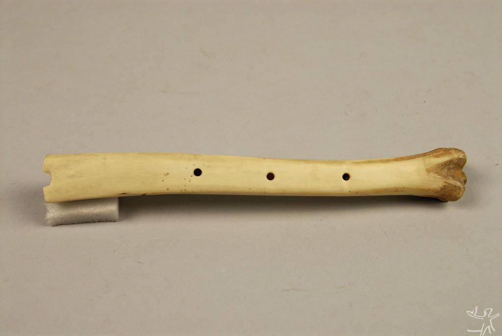

A música que conhecemos tem várias raízes origens!
História da Música
Podemos dizer que a “Música” é a arte de combinar os sons e o silêncio.Acredita-se que a música tenha surgido há 50.000 anos, onde as primeiras manifestações tenham sido feitas no continente africano, expandindo-se pelo mundo com o dispersar da raça humana pelo planeta. A música, ao ser produzida e/ou reproduzida, é influenciada diretamente pela organização sociocultural e econômica local, contando ainda com as características climáticas e o acesso tecnológico que envolvem toda a relação com a linguagem musical. A música possui a capacidade estética de traduzir os sentimentos, atitudes e valores culturais de um povo ou nação. A música é uma linguagem local e global.
 Feito por aluno.História dos Instrumentos.
Um instrumento musical é um objeto construído com o propósito de produzir música. Esses instrumentos podem ser dividos de acordo como som que repreduzem. A data e a origem são duvidosas e alvo de debates, podemos apontar duas versões que apontam aos homens das cavernas. A prinmeira que a flauta doce é o instrumento mais antigo a surgir na humanidade, há 82 mil anos, feita de ossos claro e a outra com a reprudução de barulhos aos homens da caverna bater as pedras e madeiras em outros objetos.
Feito por Aluno.Todos os Instrumentos passaram por longas modificações para ficarem como são hoje.